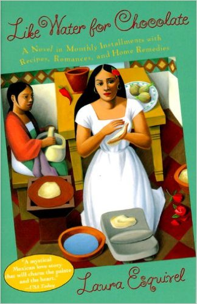

Like Water for Chocolate
Author: Laura Esquirel
ISBN-10: 0385420174
ISBN-13: 978-0385420174
Price: $8.92
Description
Like Water for Chocolate (Spanish: Como agua para chocolate) is a popular novel published in 1989 by first-time Mexican novelist Laura Esquivel.
The novel follows the story of a young girl named Tita who longs her entire life to marry her lover, Pedro, but can never have him because of her mother's upholding of the family tradition of the youngest daughter not marrying but taking care of her mother until the day she dies. Tita is only able to express herself when she cooks.
Esquivel employs magical realism to combine the supernatural with the ordinary.
About the Author
Laura Esquivel (born September 30, 1950) is a Mexican novelist, essayist, and screenwriter who has made noted contributions to Latin-American literature. Her first novel Como agua para chocolate (Like Water for Chocolate) became a bestseller in Mexico and the United States, and was later developed into an award-winning film.
She was born the third of four children to Julio Cesar Esquivel, a telegraph operator, and Josefa Valdes.
Esquivel was once married to actor and director Alfonso Arau. She currently lives in Mexico City.
In March 2009 Laura Esquivel ran as preliminary candidate of the Local Council in District XXVII of Mexico City for the PRD. Her candidacy was supported by the current Izquierda Unida, which combined various PRD groups. Despite irregularities, all ballots were recovered, confirming her victory.